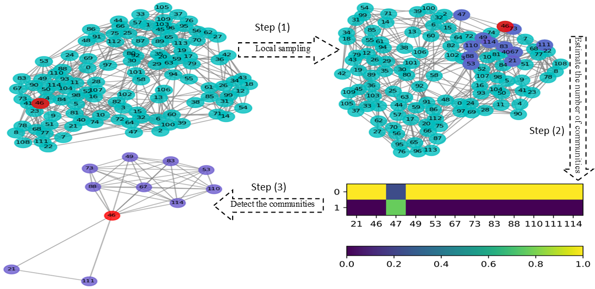
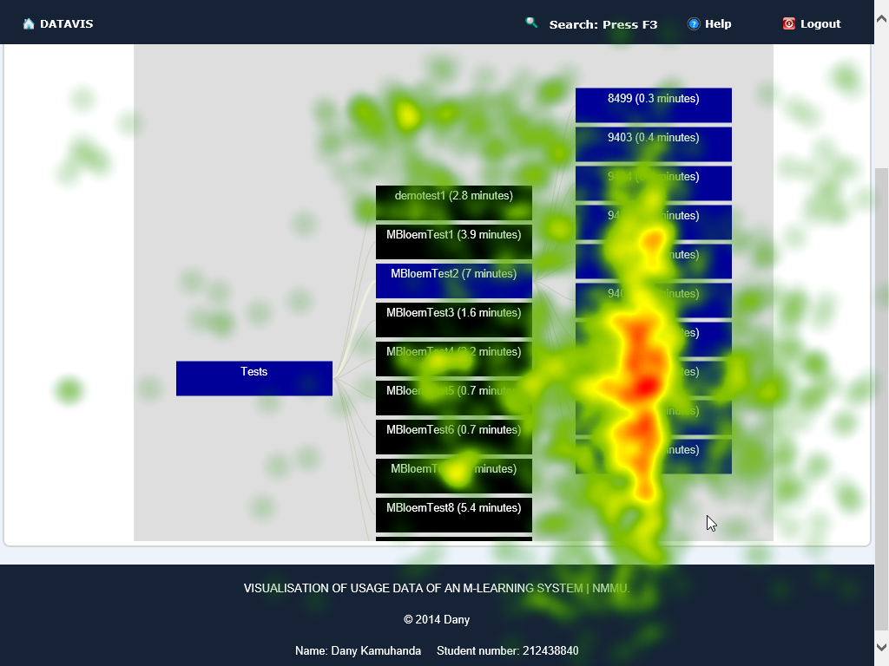
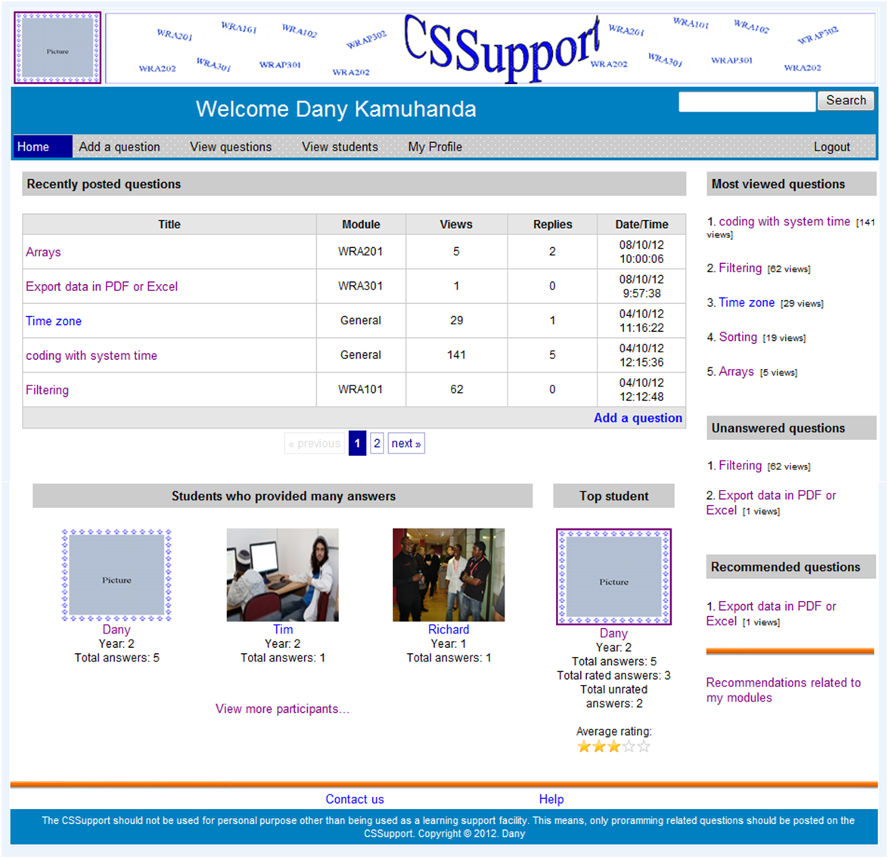
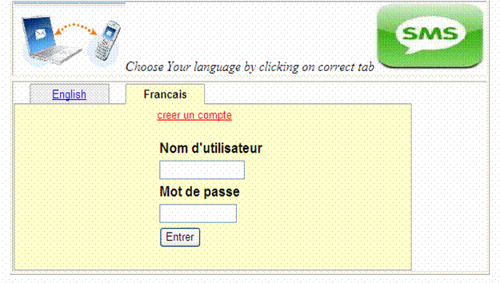

| Home | Resto |
Kamuhanda DanyFounder of Mudasobwa LTD I am a Web developer, an Android developer, and a Data Scientist. Email: danison2@yahoo.fr |
|
2020 Mudasobwa website, its iOs and Android versions. |

2020 Using Nonnegative Matrix Factorization for Community Detection in Social Networks |

2014 Visualization of the Usage Data logged from a Mobile Learning System. |

2012 A Social Network Learning Support System for sharing knowledge among undergraduate programming students. |

2010 A study on the delivery of students’ results to their mobile phones. |